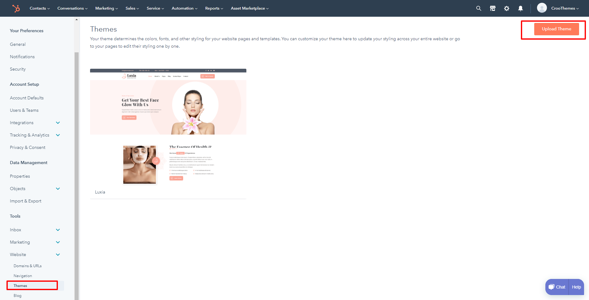
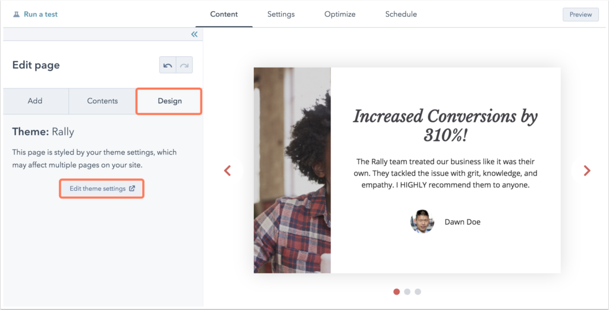
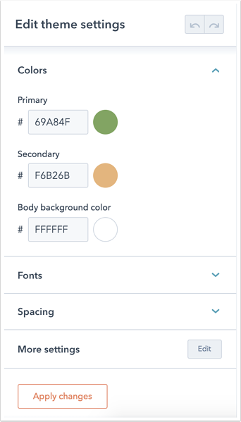
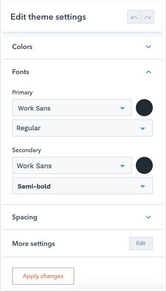
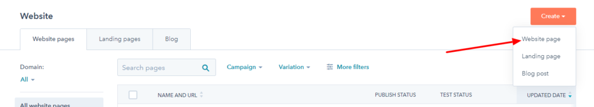
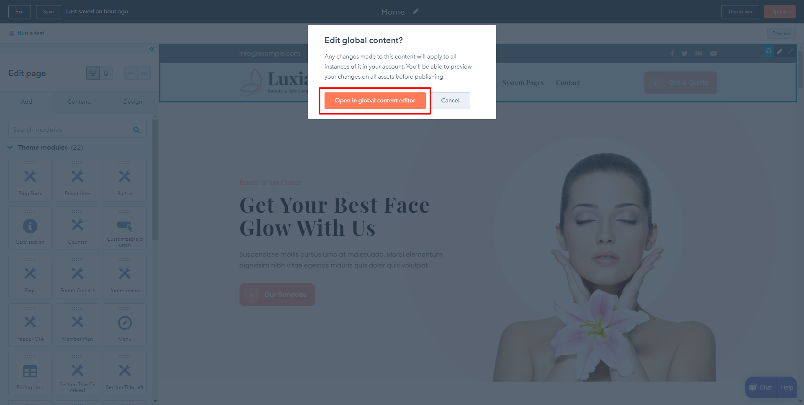
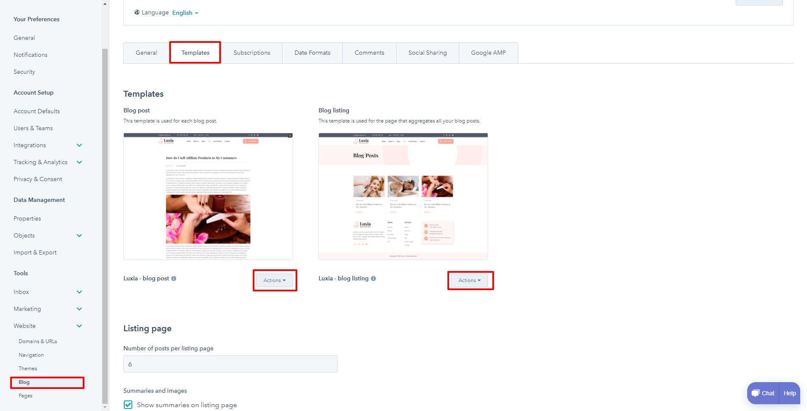

Before moving to installation, we first need to upload the theme to Hubspot.
Download theme from Themeforest.
Unzip that folder on your local PC/Mac
Inside that folder, you will find a zip Luxia.zip. (this is the Hubspot theme)
Go to your HubSpot dashboard, Click on the settings icon on the right top, then locate and click on Website > Themes from the left panel.
Upload theme using the Top right corner Upload button.

To edit your theme settings, you’ll first need to create a page with a theme template. The theme settings can be accessed within the page editor by clicking the Design tab on the left. Then click Edit theme settings.

Customizing colors, fonts, and spacing will set the default styles for all the elements on your page. If you want to edit specific details such as link colors, button colors, or default form colors, click Edit next to More settings to view additional theme settings available for your templates.
Your theme’s color settings apply a primary, secondary, and background color to all elements included in your theme templates. These styles will be applied to all elements on your website. To customize more specific settings for headings, fonts, and links, click Edit next to More settings.

Choose a primary and secondary font to apply to your website’s headings, forms, buttons, and body text. All Google fonts are supported. Click the color bubble to customize your primary or secondary font colors. You can choose a simple color value or click the Advanced tab and choose a specific hexadecimal value with a color picker.

Once you finish the above steps, the Page will load with default modules, and populated with demo content, you can then point, click and edit the content to suit your needs. You can also drag/drop other modules as needed from the left panel, as well as you can delete the unneeded modules by hovering them on the page editor.

For setting up header:

Once opened the global editor, you can set up your logo and navigation menu, social icons.
Please follow the below steps to set up the blog
Log in to Hubspot, from the top panel, go to Marketing > Website > Website Pages.
To apply the Luxia blog templates to the above-created blog post and the blog listing page, please follow the below steps.

We used the plugins below in our theme.
Bootstrap
jQuery
ImagesLoaded
FontAwesome
Parallax
Wow JS
WayPoint
Magnific PopUp
CounterUp JS
Meanmenu
Modernizr